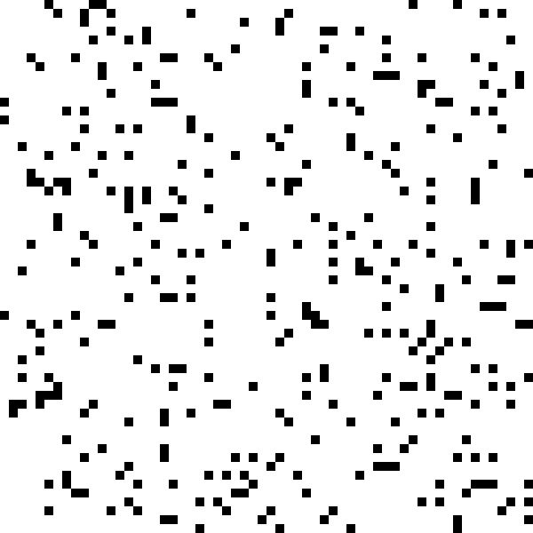

anthropomorphizing cellular automata
what is cellular automata
I think the definition of cellular autoata is best represented by an example.
Let's look at Conway's Game of Life.
Imagine a grid with cells. Each cell can be on (1) or off (0). In this grid, on is represented by a yellow square and off is represented by a black square.
Now the state of each cell is determined by the following rules:
- Any live cell with fewer than two live neighbours dies, as if by underpopulation.
- Any live cell with two or three live neighbours lives on to the next generation.
- Any live cell with more than three live neighbours dies, as if by overpopulation.
- Any dead cell with exactly three live neighbours becomes a live cell, as if by reproduction.
Here is an example of one:
A cellular automata, more generally is a set of cells & states which change overtime based on some rules.
I first learned about cellular automata when trying to code it (to practice python), which spiralled into me reading Wolfram's book, "A New Kind of Science"
What really stood out to me was the fact that Conway's Gmae of life is Turing Complete. Although (to be really honest) I don't really understand the Turing Machine, I think I understand what it means for something to be Turing Complete.
Something that is Turing Complete can simulate 1's and 0's. And if you can simulate 1's and 0's and basically perform a transformation like if it's 0 do this and if it's 1 do this, you can build a computer.
Here is a video of a computer in Conway's Game of Life:Let’s BUILD a COMPUTER in CONWAY's GAME of LIFE
To make a computer like this, you really need to understand patterns in the Game of Life. These patterns form example can be these: Still lifes oscilators and spaceships. You can read more about them here: Wiki
In particular I want to talk about this guy: The Glider

The glider moved diagonally across the space. It is considered a spaceship.
I actually want to talk about something different, nothing about making computers or understanding computation, but how this relates to us. What if we are actually the result of very complex 3D cellular automata.
anthropomorphizing the glider
It's so interesting that when we look at the glider, it is actually not a "thing". The glider is actually not an object in itself, yet we are so comfortable calling it one.
The glider is just a pattern that is a result of some specific rules. And its movement through time is predictable. Also the states which are on are considerably close together in space. These two things, I believe, result in us humans, anthropomorphizing the glider into an object
What if we were actually cellular automata. It's very different than thinking we are an object or that I am a person. We are rather the result of some rules in space. (when I say "some rules" instead of "rules" I kind of alienate the rule and the object. Like the rule doesn't even matter and it doesn't because we never think about the those rules to live. It makes things arbitary and surreal, like we are nothing more than random rules.) These rules are deeply embeded in space and time. Maybe we think we are an object because our actions are predictable and our atoms are close together as we move across space. Pretty much like a glider.
In a sense, if we are cellular automata, we are anthropomorphizing ourselves.
time travel and teleportation
My ideas here on out are a result of thinking about time travel and teleportation. Imagine you are a result of 4 rules in space and time.
Imagine you are the glider. If I pick you up and move you to another location (teleportation), would that still be you? Well in the lens of the rules of the game, no it is not. It is no longer the same "object" because the game itself doesn't see objects just the rules. And if I move the glider , there will simpily be a different intial state. The two states are not comparable.
So when we consider something to be "something" it is deeply embedded in the space because it is the space that has the rule.
Same thing with time. If I take the glider and move it to a past state, it is fundamentally a different object
Therefore I think that if we are celluar automata, teleportation and time travel are not possible.
science as a model
Ok so I have this idea, and I'm going to try my best to explain it here.
Let's assume that we are a 3D cellular automata. Much like how I can simulate a 2D cellular automata in my 3D world, let's say we are a simulated 3D automata in a 4D world, in like a 4D computer, whatever that is.
If we assume this, then we have not figured out our "rules" that predict the future. But we do have physics that is a predictive model of our physical world. For example we perceive and model the laws of physics like Newton's law of motion. Newton saw a statistical pattern in the way things move and interact and he mathematically quantified what he saw. But these are just statistical patterns of what he saw, they are not accurate to the true way the physics of the world works. In fact, we have proven Newton's models of gravity to not be correct, but merely a really good approximation or model of what we perceive.
In other words, there are statistically bigger rules that we understand which may or may not have anything to do with the true cellular automata rules that govern our universe. I want to call these "local" rules.
I actually thought of simulating various cellular automata and looking for these statistical local rules. These local rules need not be anything remotely close to the true rules that govern that world.
I'm curious about how much of the true nature of our universe we can understand. Hypothetically, if I had a 2D cellular automata world that evolved to understand that there are local rules and real rules that govern its world, can "they" understand the computer they are running on? Can they understand the pixels on the screen and how they work? In other words, if we are cellular automata, can we truly understand the nature of our world? How much can we learn about it?